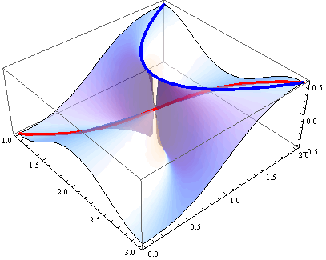
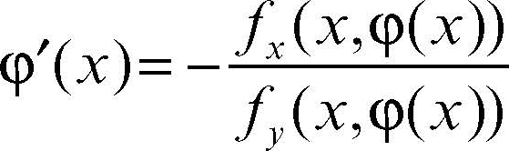
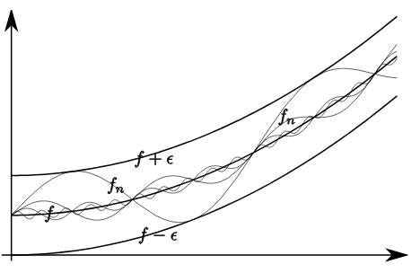
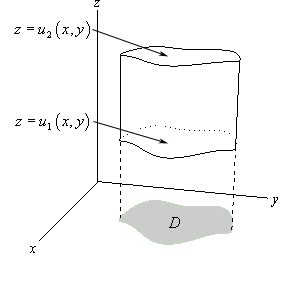

Verifica dell'esistenza di limiti, calcolo di limiti in coordinate cartesiane e polari, utilizzo del teorema del confronto..
Materiale didattico - Analisi Matematica II
(esercitazioni a.a. 2018-2019, 2019-20)



Diffeomorfismi, locale e globale invertibilità, teorema del Dini.. ESERCITAZIONE VIDEO!

Studio della convergenza di serie di funzioni, relazioni tra convergenza puntuale, uniforme e totale.. ESERCITAZIONE VIDEO!

Calcolo di integrali multipli, applicazioni di Fubini-Tonelli, domini normali, coordinate cilindriche, coordinate sferiche.. ESERCITAZIONE VIDEO!